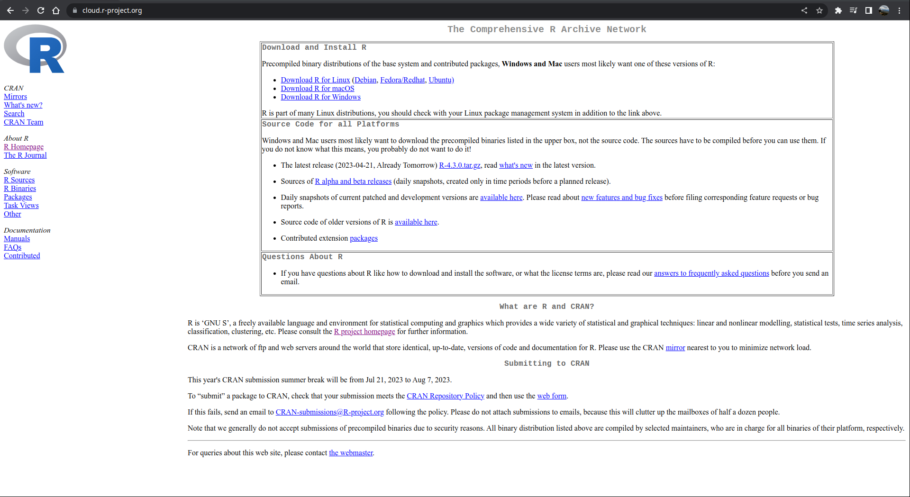
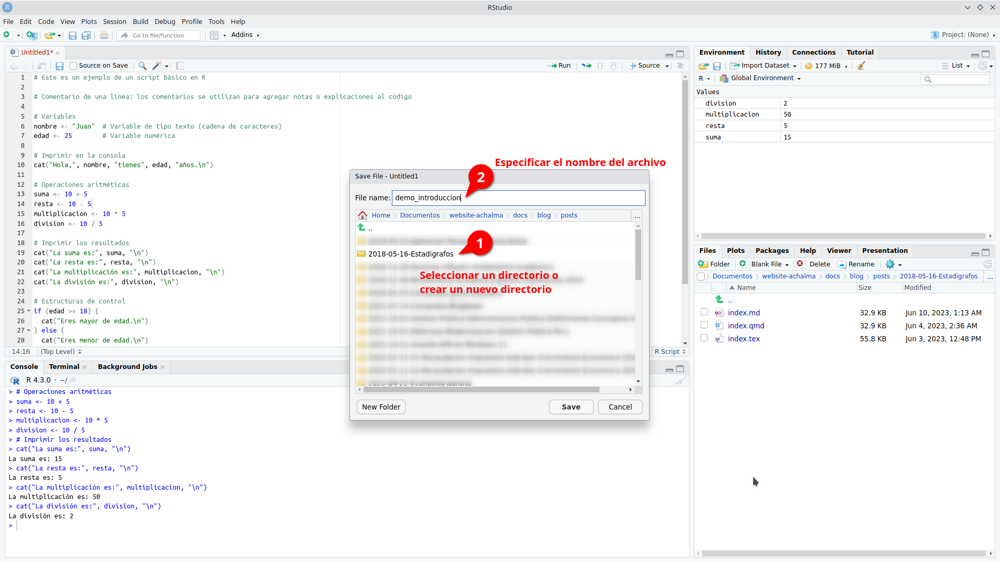

![]()
# Este es un ejemplo de un script básico en R
# Comentario de una línea: los comentarios se utilizan para agregar notas o explicaciones al código
# Variables
nombre <- "Juan" # Variable de tipo texto (cadena de caracteres)
edad <- 25 # Variable numérica
# Imprimir en la consola
cat("Hola,", nombre, "tienes", edad, "años.\n")
# Operaciones aritméticas
suma <- 10 + 5
resta <- 10 - 5
multiplicacion <- 10 * 5
division <- 10 / 5
# Imprimir los resultados
cat("La suma es:", suma, "\n")
cat("La resta es:", resta, "\n")
cat("La multiplicación es:", multiplicacion, "\n")
cat("La división es:", division, "\n")
# Estructuras de control
if (edad >= 18) {
cat("Eres mayor de edad.\n")
} else {
cat("Eres menor de edad.\n")
}
# Bucle for
for (i in 1:5) {
cat("Iteración:", i, "\n")
}Descargando e instalando R y RStudio
En este artículo, te guiaré a través de los pasos para descargar e instalar R y RStudio en un sistema operativo Ubuntu Linux.
Pasos para la descarga e instalación de R y Rstudio:
Paso 1. Descargar R en Ubuntu Linux
Para comenzar, necesitarás descargar el paquete de instalación de R desde el sitio web oficial de R. Abre tu navegador web y sigue este enlace: Enlace de descarga de R
R es un lenguaje de programación ampliamente utilizado en la comunidad estadística y de análisis de datos, y es especialmente popular entre los científicos de datos y los investigadores.

Paso 2. Instalar R en Ubuntu Linux
Los paquetes para la versión actual de R 4.2 están disponibles para la mayoría de las versiones estables de Ubuntu Desktop hasta su fecha oficial de fin de vida. Sin embargo, solo la última versión de Soporte a Largo Plazo (LTS) cuenta con soporte completo. A partir del 2 de mayo de 2022, las versiones compatibles son:
- Jammy Jellyfish (22.04, solo amd64)
- Impish Indri (21.10, solo amd64)
- Focal Fossa (20.04; LTS y solo amd64)
- Bionic Beaver (18.04; LTS)
- Xenial Xerus (16.04; LTS)
Ejecuta estas líneas (si eres root, omite sudo) para informar a Ubuntu sobre los binarios de R en CRAN.
# Actualizar índices
sudo apt update -qq
# Instalar dos paquetes auxiliares necesarios
sudo apt install --no-install-recommends software-properties-common dirmngr
# Agregar la clave de firma (de Michael Rutter) para estos repositorios
# Para verificar la clave, ejecuta: gpg --show-keys /etc/apt/trusted.gpg.d/cran_ubuntu_key.asc
# Huella digital: E298A3A825C0D65DFD57CBB651716619E084DAB9
wget -qO- https://cloud.r-project.org/bin/linux/ubuntu/marutter_pubkey.asc | sudo tee -a /etc/apt/trusted.gpg.d/cran_ubuntu_key.asc
# Agregar el repositorio de R 4.0 de CRAN -- ajustar 'focal' a 'groovy' o 'bionic' según sea necesario
sudo add-apt-repository "deb https://cloud.r-project.org/bin/linux/ubuntu $(lsb_release -cs)-cran40/"Aquí utilizamos lsb_release -cs para acceder a la versión de Ubuntu que estás utilizando: “jammy”, “impish”, “focal”, “bionic”, …
Luego, ejecuta
sudo apt install --no-install-recommends r-baseObtén más de 5000 paquetes de CRAN
Ejecuta este comando (como root o agregando sudo como prefijo) para agregar el repositorio actual de R 4.0 o posterior ‘c2d4u’:
sudo add-apt-repository ppa:c2d4u.team/c2d4u4.0+para agregar el ID de clave de este repositorio, agregar el repositorio y actualizar el índice. Ahora puedes hacer apt install --no-install-recommends r-cran-rstan o apt install --no-install-recommends r-cran-tidyverse (nuevamente como usuario root o a través de sudo).
Paso 3. Descargar RStudio en Ubuntu Linux
Puedes descargar la última versión de RStudio desde su sitio web oficial: Enlace de descarga de RStudio
RStudio RStudio es un entorno de desarrollo integrado (IDE) muy popular para trabajar con R. Proporciona una interfaz gráfica intuitiva y muchas herramientas útiles para la programación en R.

Paso 4. Instalar RStudio en Ubuntu Linux
Instalar dependencias
Antes de instalar RStudio, es posible que debas instalar algunas dependencias en tu sistema. Abre la terminal y ejecuta los siguientes comandos para instalar las dependencias requeridas:
sudo apt update
sudo apt install gdebi-coreEstos comandos actualizarán los repositorios de paquetes y luego instalarán gdebi-core, una utilidad necesaria para instalar paquetes .deb de forma sencilla y resolver dependencias automáticamente.
Instalar RStudio
Una vez que hayas descargado el archivo de instalación de RStudio y hayas instalado las dependencias necesarias, puedes proceder con la instalación. Ve al directorio donde descargaste el archivo de instalación y ejecuta el siguiente comando en la terminal:
sudo gdebi <nombre_del_archivo_de_instalación>.debReemplaza <nombre_del_archivo_de_instalación> con el nombre real del archivo de instalación descargado.
El comando gdebi instalará RStudio y resolverá automáticamente las dependencias necesarias.
Paso 5. Iniciar RStudio
Una vez completada la instalación, puedes iniciar RStudio desde el menú de aplicaciones de Ubuntu o ejecutando el siguiente comando en la terminal:
rstudioRStudio se abrirá en una ventana separada, lo que te permitirá comenzar a trabajar con R y aprovechar todas las funciones y características que ofrece el IDE.

¿Qúe nos ofrece RStudio?
Beneficios del software RStudio
RStudio es una herramienta poderosa que brinda numerosas ventajas para los usuarios. A continuación, destacamos algunas de las funcionalidades que ofrece:
Potente editor de código: RStudio proporciona un entorno de desarrollo integrado (IDE) que cuenta con un editor de código robusto. Este editor permite escribir, editar y ejecutar código de manera eficiente, lo que facilita el trabajo con el lenguaje de programación R.
Gestión del espacio de trabajo: RStudio ofrece características avanzadas para el manejo del espacio de trabajo. Puedes explorar y administrar fácilmente los objetos, variables y funciones utilizados en tu sesión de R, lo que facilita el seguimiento y la organización de tus datos y resultados.
Depuración y resaltado de sintaxis: La función de depuración de RStudio te permite identificar y corregir errores en tu código de manera eficiente. Además, el resaltado de sintaxis te ayuda a visualizar y comprender mejor la estructura de tu código, lo que facilita su lectura y mantenimiento.
Autocompletado inteligente: RStudio ofrece una función de autocompletado inteligente, que te sugiere opciones de código a medida que escribes. Esto acelera el proceso de codificación al proporcionar sugerencias contextuales y facilitar la escritura correcta de las funciones y objetos de R.
Interoperabilidad con otros software y plataformas: RStudio es compatible con una amplia gama de herramientas y plataformas. Puedes integrar fácilmente tus análisis en flujos de trabajo existentes, colaborar con otros profesionales y compartir tus resultados en diferentes formatos, como informes, gráficos interactivos o aplicaciones web.

Archivos de Script en R (.R)
En el mundo del análisis de datos y programación en R, los archivos de script (.R) desempeñan un papel fundamental. Estos archivos contienen la secuencia de comandos necesaria para realizar análisis y manipulación de datos de manera sistemática y reproducible.
Ventajas de utilizar archivos de script en R:
Documentación de tareas: Al escribir nuestros comandos en un archivo de script, estamos creando una documentación detallada de los pasos y procesos utilizados en nuestro análisis. Esto facilita la comprensión y revisión de nuestro trabajo, tanto para nosotros mismos como para otros colaboradores.
Automatización de tareas repetitivas: Los archivos de script permiten automatizar tareas que se repiten con frecuencia. Podemos definir una serie de comandos en el archivo y ejecutarlos de forma rápida y eficiente cada vez que sea necesario. Esto ahorra tiempo y reduce la posibilidad de errores humanos.
Evaluación de cambios: Al tener nuestros comandos en un archivo de script, podemos realizar modificaciones y ajustes en el análisis de manera más ágil. Podemos realizar pruebas y evaluaciones de los cambios sin necesidad de volver a escribir todo el código desde cero. Esto nos brinda flexibilidad y nos permite iterar y mejorar nuestro análisis de manera más eficiente.
Creando y Ejecutando un Script en RStudio
Los scripts nos permiten escribir y ejecutar una serie de comandos de manera secuencial, lo que facilita la automatización y reproducción de tareas en nuestros análisis de datos.
Paso 1: Crear un nuevo archivo de script
En primer lugar, abrimos RStudio y creamos un nuevo archivo de script. Para hacer esto, seleccionamos “Archivo” en la barra de menú, luego “Nuevo archivo” y finalmente “Script R”. Esto abrirá un nuevo editor de texto donde podemos escribir nuestro código.


Paso 2: Escribir el código en el script
Una vez que tenemos nuestro archivo de script abierto, podemos comenzar a escribir nuestro código en R. Podemos utilizar cualquier comando o función de R en el script para realizar análisis de datos, manipulación de variables, visualización, entre otros. Es importante asegurarse de que el código esté escrito correctamente y tenga una sintaxis válida.

Paso 3: Ejecutar el script
Una vez que hemos escrito nuestro código en el archivo de script, podemos ejecutarlo para obtener los resultados deseados. Para hacer esto, podemos utilizar el atajo de teclado “Ctrl + Enter” o simplemente hacer clic en el botón “Ejecutar” en la parte superior del editor de texto.

RStudio ejecutará el código línea por línea y mostrará los resultados en la consola.

Paso 4: Guardar el script
Es importante guardar regularmente nuestro script para evitar perder nuestro trabajo. Para guardar el archivo de script, seleccionamos “Archivo” en la barra de menú y luego “Guardar” o “Guardar como”.

Podemos elegir una ubicación y un nombre de archivo apropiados para guardar nuestro script.


Paso 5: Continuar escribiendo y ejecutando el código
Podemos continuar escribiendo y ejecutando más código en nuestro script según nuestras necesidades. Podemos agregar nuevas líneas de código, modificar las existentes o eliminar las que ya no necesitamos. Es recomendable guardar el script regularmente a medida que realizamos cambios.
Paso 6: Exportar los resultados (opcional)
Si deseamos guardar los resultados de nuestro análisis, podemos exportarlos a archivos o formatos específicos. Por ejemplo, podemos guardar tablas de datos en archivos CSV, gráficos en imágenes o informes en formatos de texto. Esto nos permite compartir y utilizar los resultados fuera de RStudio.
Recuerda que practicar y experimentar con diferentes comandos y funciones en RStudio te ayudará a familiarizarte con el entorno y mejorar tus habilidades de programación en R. ¡Diviértete explorando el mundo del análisis de datos con RStudio y sus potentes scripts!
Shortcuts
Aquí tienes una tabla con algunos atajos de teclado útiles en RStudio para usuarios de Ubuntu Linux:
| Acción | Atajo de teclado |
|---|---|
| Ejecutar el código / selección actual y saltar a la línea siguiente | Ctrl + Enter |
| Ejecutar el código / selección actual y no saltar a la línea siguiente | Alt + Enter |
| Ejecutar línea de código | Shift + Enter |
| Comentar/descomentar línea de código | Ctrl + Shift + C |
| Copiar línea de código | Ctrl + Shift + D |
| Pegar línea de código | Ctrl + Shift + V |
| Ir a la línea | Ctrl + G |
| Ir al inicio del documento | Ctrl + Home |
| Ir al final del documento | Ctrl + End |
| Completar código | Tab |
| Abrir ayuda | F1 |
| Guardar el archivo actual | Ctrl + S |
| Cerrar archivo | Ctrl + W |
| Deshacer | Ctrl + Z |
| Rehacer | Ctrl + Y |
| Abrir consola de R | Ctrl + Shift + Enter |
| Buscar en el archivo | Ctrl + F |
| Buscar y reemplazar en el archivo | Ctrl + Shift + F |
| Colapsar/expandir bloque de código | Ctrl + Shift + [ |
| Aumentar tamaño de fuente | Ctrl + + |
| Disminuir tamaño de fuente | Ctrl + - |
| Nuevo archivo Script R | Shift + Ctrl + N |
| Abrir archivo | Ctrl + O |
| Ejecutar todo el script | Ctrl + Alt + R |
| Ejecutar el código desde el principio hasta la línea actual | Ctrl + Alt + B |
| Ejecutar el código desde la línea actual hasta el final | Ctrl + Alt + E |
| Mover el cursor al editor de código fuente | Ctrl + 1 |
| Mover el cursor a la consola | Ctrl + 2 |
| Eliminar selección actual | Ctrl + D |
| Limpiar consola | Ctrl + L |
| Navegar por el historial de la consola | arriba/abajo |
| Mover la línea de código arriba y abajo (evita el trabajo de copiar y pegar) | Alt + arriba/abajo |
| Interrumpir el comando en ejecución | Esc |
Estos atajos de teclado te ayudarán a agilizar tu flujo de trabajo en RStudio en Ubuntu Linux. Recuerda que también puedes personalizar los atajos de teclado según tus preferencias en la sección de configuración de RStudio.
Lo que debemos saber
Manipulación de datos
Cómo citar
BibTeX
@online{achalma mendoza2023,
author = {Achalma Mendoza, Edison},
title = {Introducción a R en Linux},
date = {2023-06-10},
url = {https://achalmaedison.netlify.app//docs/blog/posts/2023-06-10-Introduccion-R},
langid = {es}
}
Por favor, cita este trabajo como:
Achalma Mendoza, E. (2023, June 10). Introducción a R en Linux.
Retrieved from https://achalmaedison.netlify.app//docs/blog/posts/2023-06-10-Introduccion-R